Расчет простых цепей постоянного тока
В электротехнике принято считать, что простая цепь – это цепь, которая сводится к цепи с одним источником и одним эквивалентным сопротивлением. Свернуть цепь можно с помощью эквивалентных преобразований последовательного, параллельного и смешанного соединений. Исключением служат цепи, содержащие более сложные соединения звездой и треугольником. Расчет цепей постоянного тока производится с помощью закона Ома и Кирхгофа.
Пример 1
Два резистора подключены к источнику постоянного напряжения 50 В, с внутренним сопротивлением r=0,5 Ом. Сопротивления резисторов R1 = 20 и R2 = 32 Ом (рис. 1). Определить ток в цепи и напряжения на резисторах.
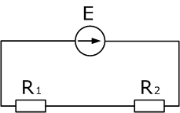
Рис. 1
Так как резисторы подключены последовательно, эквивалентное сопротивление будет равно их сумме. Зная его, воспользуемся законом Ома для полной цепи, чтобы найти ток в цепи.
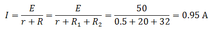
Теперь зная ток в цепи, можно определить падения напряжений на каждом из резисторов.
U1=I·R1= 0,95·20 = 19 (В)
U2=I·R2= 0,95·32 = 30,4 (В)
Проверить правильность решения можно несколькими способами. Например, с помощью закона Кирхгофа, который гласит, что сумма ЭДС в контуре равна сумме напряжений в нем.
E = I·R1 + I·R2 + I·Rист
50 = 0,95·20 + 0,95·32 + 0,95·0,5
50 В =50В
Но с помощью закона Кирхгофа удобно проверять простые цепи, имеющие один контур. Более удобным способом проверки является баланс мощностей. В цепи должен соблюдаться баланс мощностей, то есть энергия отданная источниками должна быть равна энергии полученной приемниками.
Pист = Pпр
Мощность источника определяется как произведение ЭДС на ток, а мощность полученная приемником как произведение падения напряжения на ток.
I·E = I·U1 + I·U2 + I·Uист
I·E = I2·R1 + I2·R2 + I2·Rист
0,95·50 = 0,952·20 + 0,952·32 + 0,952·0,5
47,5 = 47,5 (Вт)
Преимущество проверки балансом мощностей в том, что не нужно составлять сложных громоздких уравнений на основании законов Кирхгофа, достаточно знать ЭДС, напряжения и токи в цепи.
Пример 2
Общий ток цепи, содержащей два соединенных параллельно резистора R1=70 Ом и R2=90 Ом, равен 500 мА (рис. 2). Определить токи в каждом из резисторов.
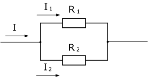
Рис. 2
Два последовательно соединенных резистора ничто иное, как делитель тока. Определить токи, протекающие через каждый резистор можно с помощью формулы делителя, при этом напряжение в цепи нам не нужно знать, потребуется лишь общий ток и сопротивления резисторов.
Токи в резисторах:
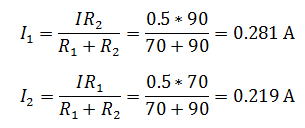
В данном случае удобно проверить задачу с помощью первого закона Кирхгофа, согласно которому сумма токов сходящихся, в узле равна нулю.
I = I1 + I2
0,5 = 0,5 (A)
Решить задачу другим способом. Для этого необходимо найти напряжение в цепи, которое будет общим для обоих резисторов, так как соединение параллельное. Для того чтобы его найти, нужно сначала рассчитать сопротивление цепи:
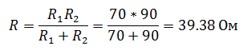
А затем напряжение:
U = I·R = 0,5·39,8 = 19,69 (В)
Зная напряжения, найдем токи, протекающие через резисторы
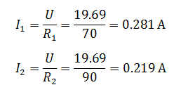
Токи получились теми же.
Пример 3
В электрической цепи, изображенной на рис. 3 R1=50 Ом, R2=180 Ом, R3=220 Ом. Найти мощность, выделяемую на резисторе R1, ток через резистор R2, напряжение на резисторе R3, если известно, что напряжение на зажимах цепи 100 В.
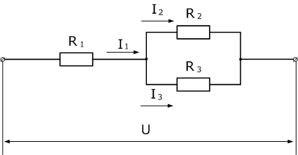
Рис. 3
Чтобы рассчитать мощность постоянного тока, выделяемую на резисторе R1, необходимо определить ток I1, который является общим для всей цепи. Зная напряжение на зажимах и эквивалентное сопротивление цепи, можно его найти.
Эквивалентное сопротивление и ток в цепи
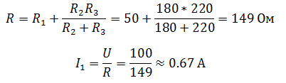
Отсюда мощность, выделяемая на R1:
P = I2·R1 = 0,672·50 ≈ 22,5 (B)
Ток I2 определим с помощью формулы делителя тока, учитывая, что ток I1 для этого делителя является общим
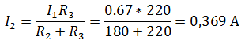
Так как, напряжение при параллельном соединении резисторов одинаковое, найдем U3, как напряжение на резисторе R2:
U3 = U2 = I2 · R2= 0,37·180 = 66,4 (B)
Пример 4
Имеется лампочка на напряжение 12 В мощностью 20 Вт и источник 17 В, к которому нам нужно подключить эту лампочку. Рассчитать резистор, который понизит напряжение 17 В до 12 В (рис. 4).
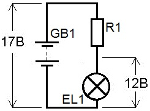
Рис. 4
При последовательном соединении элементов напряжения на них могут отличаться, но ток всегда одинаковый на любом участке цепи. Вычислим ток, потребляемый лампочкой:
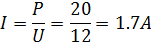
Значит, через резистор протекает такой же ток. В качестве напряжения берем падение напряжения на гасящем резисторе, ведь это действительно то самое напряжение, которое действует на этом резисторе (Uобщ=UR1+UR2)
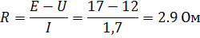
Из приведенного примера совершенно очевидно, что
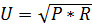
. Причем это относится не только к резисторам, но и, например, к динамикам, если мы вычисляем какое напряжение нужно подвести к динамику с заданной мощностью и сопротивлением, чтобы он развил эту мощность.